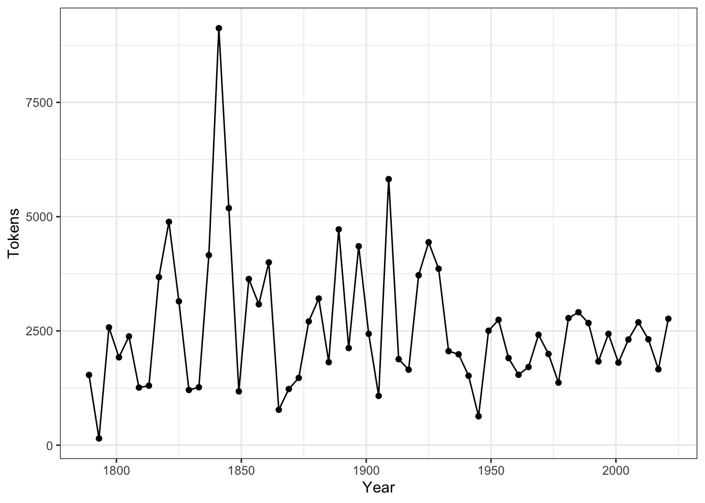

Chapter 10 Vector Space Representation
10.1 Data Processing Flowchart

10.2 Document-Feature Matrix (dfm)
Two ways to create Dcument-Feature-Matrix:
- create
dfmbased on ancorpusobject - create
dfmbased on antokenobject
For English data, quanteda can take care of the word tokenization fairly well so you can create dfm directly from corpus.
However, for Chinese data, it is suggested to create your own corpus token object first, and then feed it to dfm() to create dfm for your corpus.
10.3 Defining Feature
10.3.1 Determining Linguistic Granularity
- Linguistic units at multiple levels:
- words
- n-grams
10.3.2 Distributional Cut-offs for Features
- Distributional Cut-offs to Select/Filter Important Features
- Frequency
- Dispersion
- Other self-defined weights
10.4 Applying DFM
## Document-feature matrix of: 10 documents, 10 features (43.0% sparse).
## 10 x 10 sparse Matrix of class "dfm"
## features
## docs fellow-citizens of the senate and house representatives :
## 1789-Washington 1 71 116 1 48 2 2 1
## 1793-Washington 0 11 13 0 2 0 0 1
## 1797-Adams 3 140 163 1 130 0 2 0
## 1801-Jefferson 2 104 130 0 81 0 0 1
## 1805-Jefferson 0 101 143 0 93 0 0 0
## 1809-Madison 1 69 104 0 43 0 0 0
## 1813-Madison 1 65 100 0 44 0 0 0
## 1817-Monroe 5 164 275 0 122 0 1 0
## 1821-Monroe 1 197 360 0 141 0 0 0
## 1825-Adams 0 245 304 0 116 0 1 0
## features
## docs among vicissitudes
## 1789-Washington 1 1
## 1793-Washington 0 0
## 1797-Adams 4 0
## 1801-Jefferson 1 0
## 1805-Jefferson 7 0
## 1809-Madison 0 0
## 1813-Madison 1 0
## 1817-Monroe 3 0
## 1821-Monroe 1 0
## 1825-Adams 3 1## [1] 9357## the of , and . to in a our that we be is
## 10082 7103 7026 5310 4945 4526 2785 2246 2181 1789 1739 1481 1462
## it for by have which with not
## 1389 1197 1083 1011 1006 958 957corp_us_dfm2 <- corp_us %>%
dfm(remove = stopwords("English"), remove_punct = T) %>% # stopwords
dfm_trim(min_docfreq = 2, max_docfreq = ndoc(corp_us), docfreq_type = "count", min_termfreq = 5) # freq+dispersion cutoff
corp_us_dfm2[1:10,1:10]## Document-feature matrix of: 10 documents, 10 features (60.0% sparse).
## 10 x 10 sparse Matrix of class "dfm"
## features
## docs fellow-citizens senate house representatives among
## 1789-Washington 1 1 2 2 1
## 1793-Washington 0 0 0 0 0
## 1797-Adams 3 1 0 2 4
## 1801-Jefferson 2 0 0 0 1
## 1805-Jefferson 0 0 0 0 7
## 1809-Madison 1 0 0 0 0
## 1813-Madison 1 0 0 0 1
## 1817-Monroe 5 0 0 1 3
## 1821-Monroe 1 0 0 0 1
## 1825-Adams 0 0 0 1 3
## features
## docs vicissitudes incident life event filled
## 1789-Washington 1 1 1 2 1
## 1793-Washington 0 0 0 0 0
## 1797-Adams 0 0 2 0 0
## 1801-Jefferson 0 0 1 0 0
## 1805-Jefferson 0 0 2 0 0
## 1809-Madison 0 0 1 0 1
## 1813-Madison 0 0 1 0 0
## 1817-Monroe 0 2 1 3 0
## 1821-Monroe 0 0 2 1 0
## 1825-Adams 1 0 1 0 0## [1] 2578## people government us can upon must great
## 575 564 478 471 371 366 340
## may states shall
## 338 333 314
10.4.1 Document Similarity
corp_us_dist <- corp_us_dfm2 %>% dfm_weight(scheme = "prop") %>% textstat_dist()
corp_us_hist <- corp_us_dist %>% as.dist %>% hclust
plot(corp_us_hist)